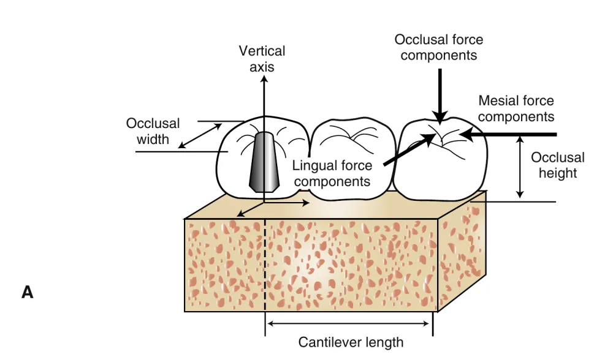
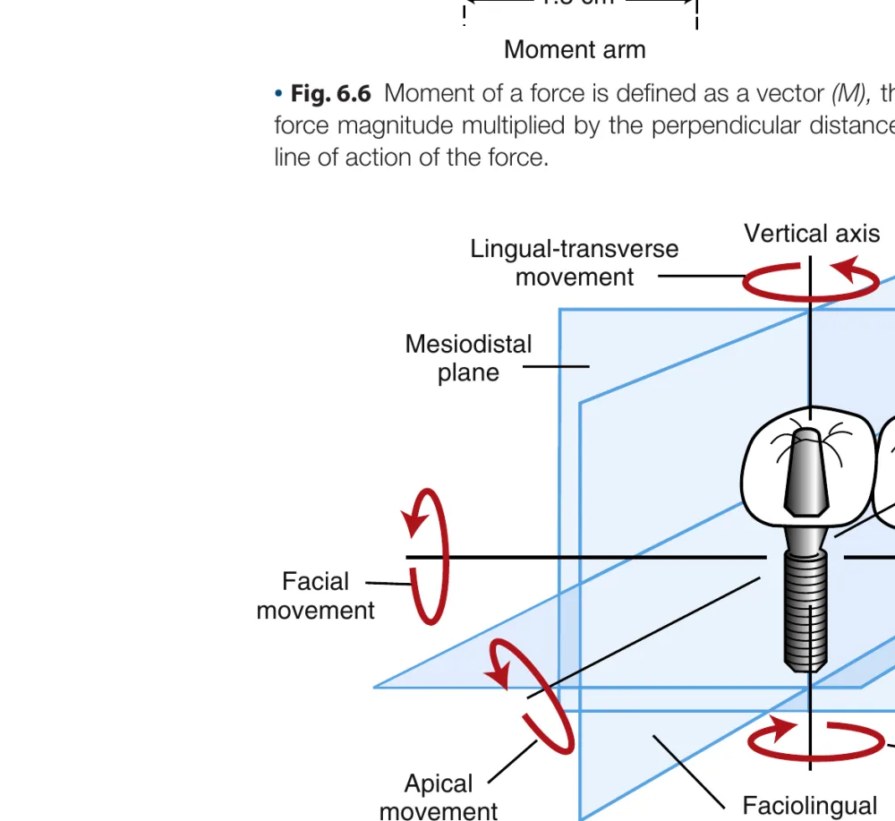

نسخه استخراجشده؛ ترجمه یا تأیید علمی انجام نشده است. وضعیت: captured
یک نیروی ۱۰۰ نیوتنی میتواند بیخطر باشد یا مخرب — و تفاوت در محل اعمال است، نه در بزرگی.
با یک مثال شروع کنیم: «یک نیروی ۱۰۰ نیوتنی که مستقیماً روی ایمپلنت اعمال شود، بار ممان یا گشتاور ایجاد نمیکند، چون هیچ نیروی چرخشی از راه یک فاصلهی آفست اعمال نمیشود.»
«فاصلهی آفست» کلیدواژه است. همان نیرو اگر با فاصله اعمال شود، ممان میسازد — یعنی نیروی چرخشی.
و سه بازوی گشتاور بالینی داریم:
«سه بازوی ممان بالینی در دندانپزشکی ایمپلنت وجود دارد: (۱) ارتفاع اکلوزال، (۲) طول کانتیلور، و (۳) عرض اکلوزال.»
هر سه را جدا بشناس؛ هر کدام فاصلهای است در جهتی متفاوت:
• ارتفاع اکلوزال — فاصلهی عمودی از کرست تا سطح اکلوزال. هرچه تاج بلندتر، بازو بلندتر.
• طول کانتیلور — فاصلهی افقی مزیوـدیستالی از آخرین ایمپلنت.
• عرض اکلوزال — فاصلهی باکولینگوالی از محور ایمپلنت تا نقطهی تماس. میز اکلوزال پهن، بازوی هر تماس آفست را بلندتر میکند.
و شش چرخش ممکن: «در مجموع شش ممان (چرخش) میتواند حول سه محور مختصات بالینی که پیشتر توصیف شد ایجاد شود: اکلوزوـاپیکالی، فاسیولینگوالی، و مزیوـدیستالی.»
سه محور، و حول هر محور دو جهت چرخش = شش ممان.
و چرا این خطرناک است؟ «اگر نیرویی در فاصلهای دور از یک حلقهی ضعیف در ایمپلنت یا پروتز اعمال شود، آنگاه شکست خمشی یا پیچشی میتواند از بارهای ممان ناشی شود.»
«حلقهی ضعیف» — یعنی ممان جایی میشکند که ضعیفترین است، نه لزوماً جایی که نیرو وارد شده.
و راه کاهش: «بزرگی نیرو میتواند با کاهش این تشدیدکنندههای مهم نیرو کم شود: طول کانتیلور، بارهای آفست، و ارتفاع تاج.»
سه تشدیدکننده — و هر سه را میتوان در طرح درمان کم کرد، هرچند کنترل کامل بزرگی نیرو بهندرت در دست دندانپزشک است.

این بخش یک چرخهی معیوب را توضیح میدهد که باید بشناسی.
قاعده این است: «در استخوان دیویژن A، بار ممان اولیه در کرست کمتر از دیویژن C یا دیویژن D است، چون ارتفاع تاج در دیویژن C و دیویژن D بیشتر است.»
منطق را دنبال کن:
• استخوان تحلیل رفته = ارتفاع ریج کمتر
• ارتفاع ریج کمتر = فاصلهی بیشتر تا سطح اکلوزال = تاج بلندتر
• تاج بلندتر = بازوی گشتاور بلندتر
• بازوی بلندتر = ممان بیشتر روی استخوانی که از قبل ضعیفتر است
یعنی بدترین بار روی ضعیفترین استخوان میافتد. این همان چیزی است که تحلیل ریج را از یک مسئلهی «کمبود حجم» به یک مسئلهی بیومکانیکی تبدیل میکند.
و این چرخه خودش را تشدید میکند: هر تحلیل کرستال، ارتفاع اکلوزال را بیشتر میکند؛ ریزچرخش و لقی فاسیولینگوالی بیشتر میشود و تحلیل کرستال بیشتری میآورد — تا وقتی محیط بیومکانیکی اصلاح نشود.
و همین توضیح میدهد چرا پیوند عمودی در پروتز اهمیت دارد، حتی وقتی میشد ایمپلنت کوتاهتری کاشت: پیوند فقط جا برای ایمپلنت نمیسازد، بازوی گشتاور را کوتاه میکند.
ممان پیچشی و مزوبار:
یک مثال دیگر: «یک جزء نیروی لینگوالی نیز ممکن است یک ممان پیچشی حول محور گردن ایمپلنت ایجاد کند اگر از راه یک طول کانتیلور اعمال شود.»
و دربارهی پروتزهای بار: «یک ایمپلنت با مزوبار کانتیلورشده که ۱ تا ۳ سانتیمتر امتداد دارد، دامنههای معناداری از بارهای ممان دارد.»
۱ تا ۳ سانتیمتر — یعنی ۱۰ تا ۳۰ میلیمتر. و چون ممان حاصلضرب نیرو در فاصله است، سهبرابر شدن فاصله یعنی سهبرابر شدن ممان با همان نیرو.
و جمعبندی پیامد کلی:
«بزرگی بارها روی ایمپلنتهای دندانی میتواند با در نظر گرفتن دقیق موقعیت قوس (یعنی بارهای بالاتر در خلفی نسبت به قدامی مندیبل و ماگزیلا)، حذف بارهای ممان، و افزایش سطح در دسترس برای مقاومت در برابر بار اعمالشده (یعنی بهینهسازی هندسه برای سطح کاربردی یا افزایش شمار ایمپلنتهای بهکاررفته) کاهش یابد.»
سه اهرم کنترل: موقعیت قوس، حذف ممان، افزایش سطح. این سه، ستون فقرات کل طرح پروتزیاند و در یونیتهای بعدی بارها به آنها برمیگردیم.
و توجه کن که «بارهای بالاتر در خلفی» با آنچه در تخصص جراحی خواندی میخواند — همان ناحیهای که در یک مطالعه، تحلیل سالانهی استخوان اطراف ایمپلنتهایش ۳٫۵ برابر ناحیهی قدامی بود.
